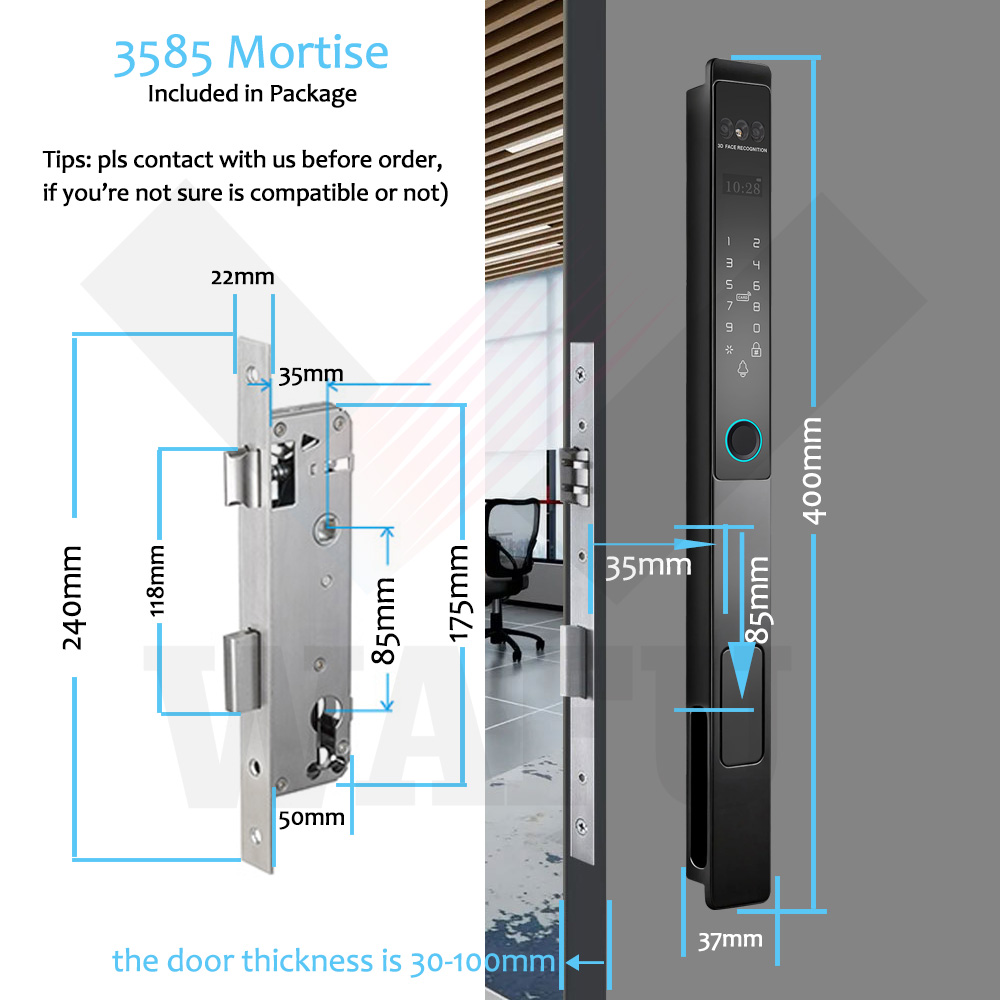
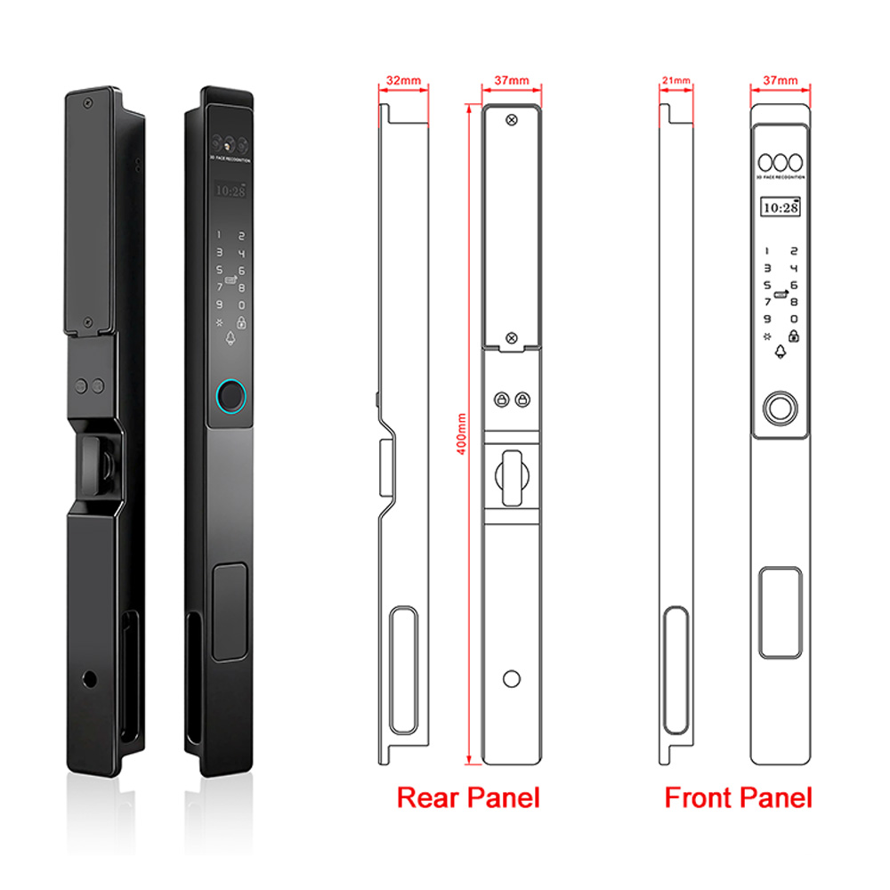
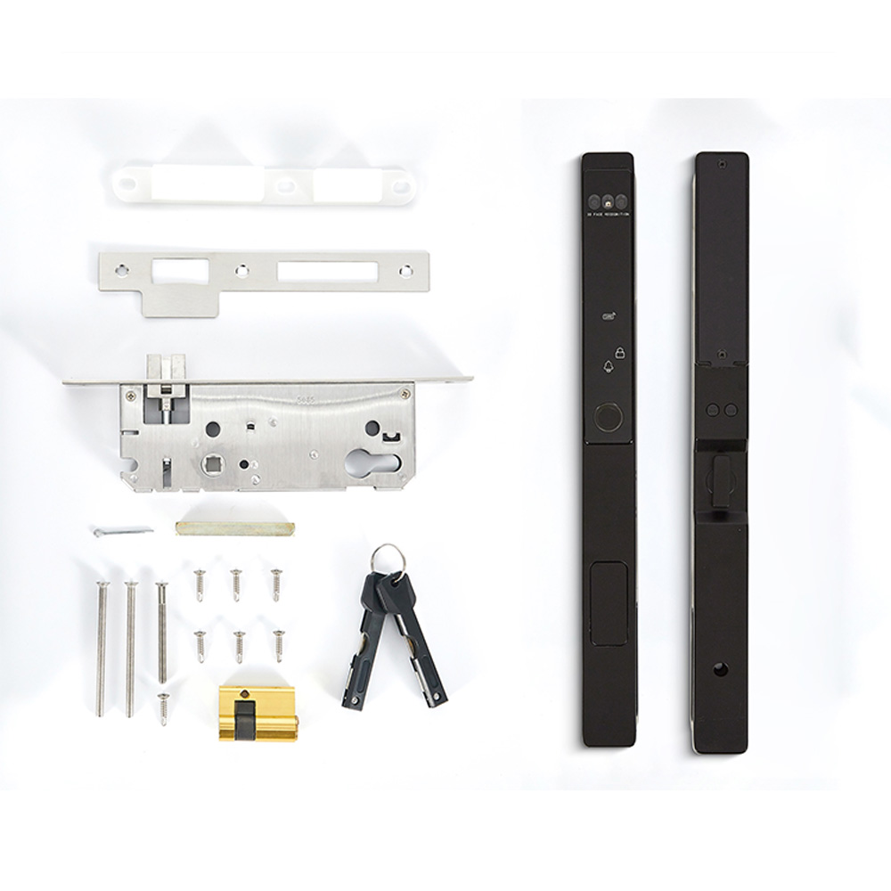
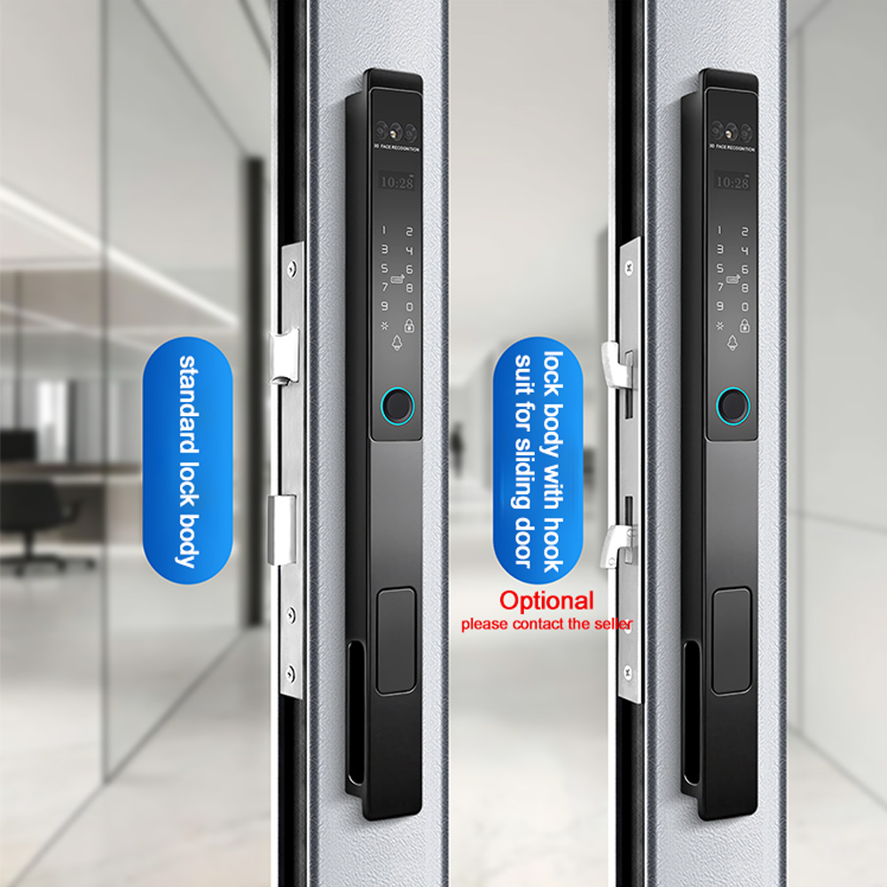
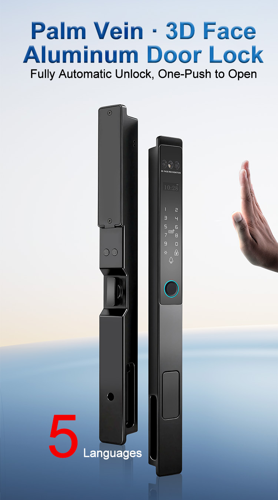
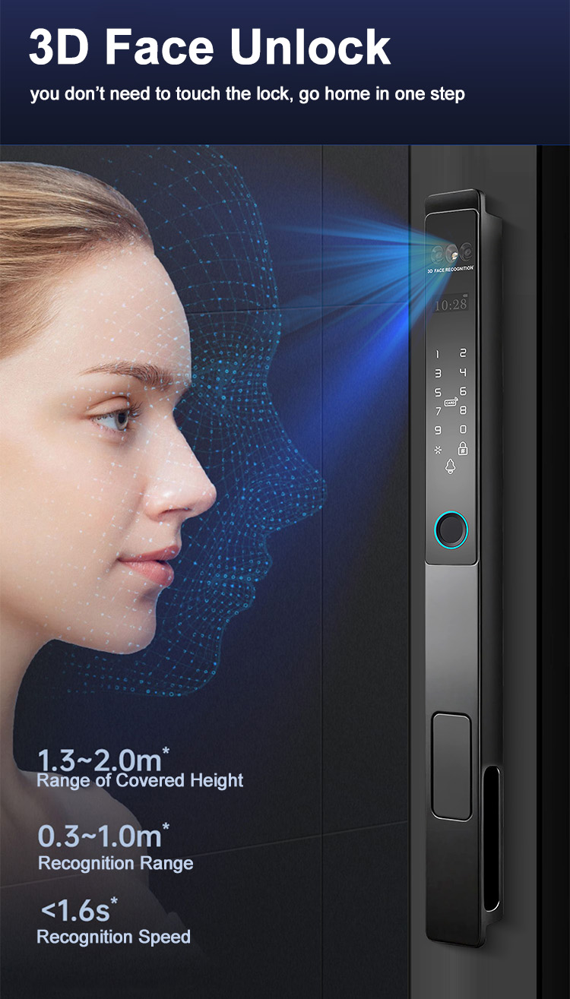
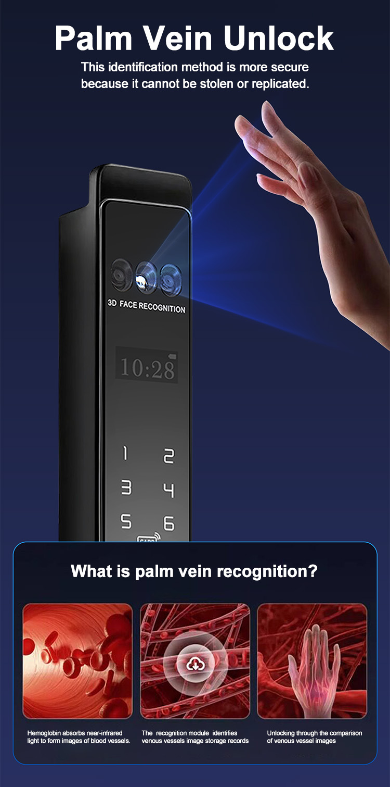
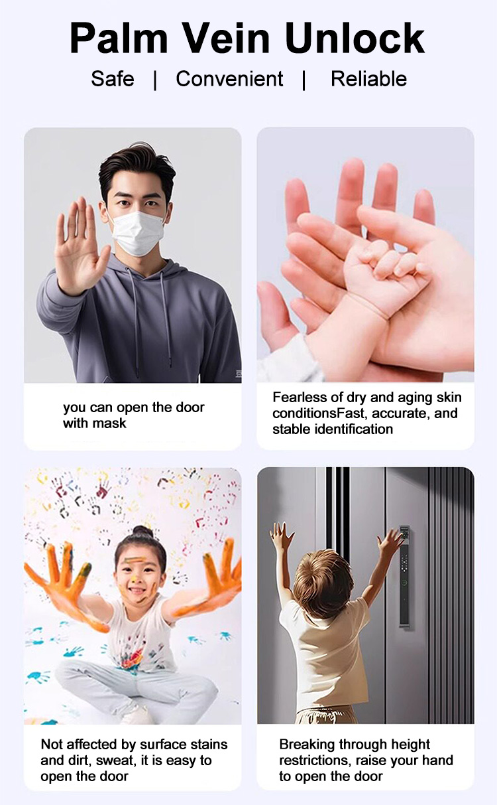

WF-021 Fechadura de alumínio totalmente automática com rosto 3D e veia da palma
Rosto 3D e veia da palma | Abertura automática por botão | Painel estreito de 37 mm | IP67
- Marca / modelo: WAFU WF-021
- Funções principais: Corpo totalmente automático com abertura por botão, reconhecimento facial 3D e reconhecimento da veia da palma
- Métodos de abertura: Rosto 3D / veia da palma / impressão digital / palavra-passe / cartão IC / chave mecânica / App Tuya opcional
- Capacidade: Incluída na capacidade total inferior a 300 grupos de utilizadores
- Alimentação e bateria: Bateria de lítio recarregável de 3200 mAh; Cerca de 3 meses em utilização normal com carga completa
- Compatibilidade das portas: 30-100 mm; portas de madeira, aço, latão, inox e alumínio
- Proteção: IP67
Introdução do produto
Os projetos com portas de alumínio e portas de correr precisam de acesso rápido sem sacrificar um perfil estreito e limpo. WF-021 combina reconhecimento facial 3D, reconhecimento da veia da palma e um corpo de fechadura totalmente automático numa fechadura de alumínio de 37 mm.
Para grossistas e parceiros OEM
- OEM/ODM para marcas globais: design do painel, branding da App e embalagem
- Suporte OEM/ODM para logótipo, embalagem, cor e configurações de projeto
- App Tuya opcional para gestão e desbloqueio remoto
- Compatível com portas de 30-100 mm e sistemas comuns de portas de alumínio
Segurança
- Sete opções de acesso: rosto 3D, veia da palma, impressão digital, palavra-passe, cartão IC, chave mecânica e App Tuya opcional
- O reconhecimento biométrico utiliza características únicas do rosto, da veia da palma e da impressão digital
- Design IP67 para instalações de portas exigentes
Durabilidade
- Desbloqueio totalmente automático e abertura por botão para acesso diário rápido
- Bateria de lítio recarregável de 3200 mAh com carregamento de emergência USB-C
- Intervalo de funcionamento de -20 °C a +70 °C
Conveniência
- Interface em cinco idiomas: chinês, inglês, vietnamita, português e malaio
- O painel ultrafino de 37 mm preserva o aspeto de portas de alumínio, com moldura e de correr
- Direção esquerda/direita configurável para a instalação
Parceria e serviço
- Disponível para venda por grosso, private label e fornecimento de projetos
- App Tuya opcional e embalagem personalizada
- Apoio na avaliação de amostras e cotações para grandes quantidades
Guias relacionados
- Tecnologia de fechaduras inteligentes com olho mágico
- Guia de duração e manutenção da bateria
- Escolher um parceiro OEM/ODM
WF-021 Especificação
| Atributo | Especificação |
|---|---|
| Número do modelo | WF-021 |
| Marca | WAFU |
| Cor | Preto |
| Material | Liga de alumínio |
| Dimensões do produto | Painel frontal: 400*37*21 mm; painel traseiro: 400*37*32 mm |
| Métodos de abertura | Rosto 3D / veia da palma / impressão digital / palavra-passe / cartão IC / chave mecânica / App Tuya opcional |
| Capacidade facial | Incluída na capacidade total inferior a 300 grupos de utilizadores |
| Capacidade de impressões | Incluída na capacidade total inferior a 300 grupos de utilizadores |
| Capacidade de palavras-passe e cartões | Menos de 300 grupos de utilizadores no total |
| Alimentação | Bateria de lítio recarregável de 3200 mAh |
| Alimentação de emergência | Interface Type-C para abertura de emergência com power bank |
| Duração da bateria | Cerca de 3 meses em utilização normal com carga completa |
| Rede inteligente | App Tuya opcional; versão sem fios depende da configuração |
| Funções biométricas | Módulo biométrico de rosto 3D e veia da palma; abertura totalmente automática |
| Espessura da porta | 30-100 mm; portas de madeira, aço, latão, inox e alumínio |
| Direção de abertura | Esquerda/direita configurável |
| Idiomas de voz | Cinco idiomas: chinês, inglês, vietnamita, português e malaio |
| Registos de abertura | Depende da configuração da App Tuya opcional |
| Proteção contra água | IP67 |
| Tamanho da embalagem | Aprox. 45*18*13 cm |
| Peso bruto por unidade | Aprox. 2,3 kg |
| Embalagem de cartão | 10 unidades/cartão; tamanho do cartão 60*45*36 cm |
| Personalização | OEM/ODM, logótipo, embalagem, App opcional e personalização de projeto |
Detalhes e configuração do produto






